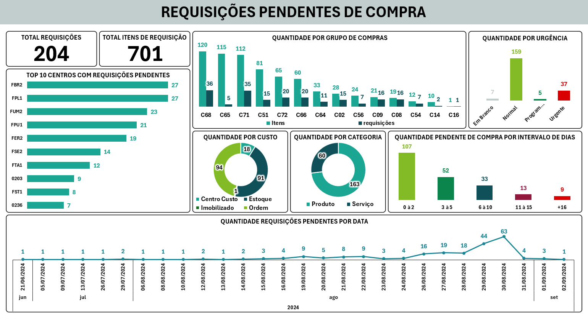
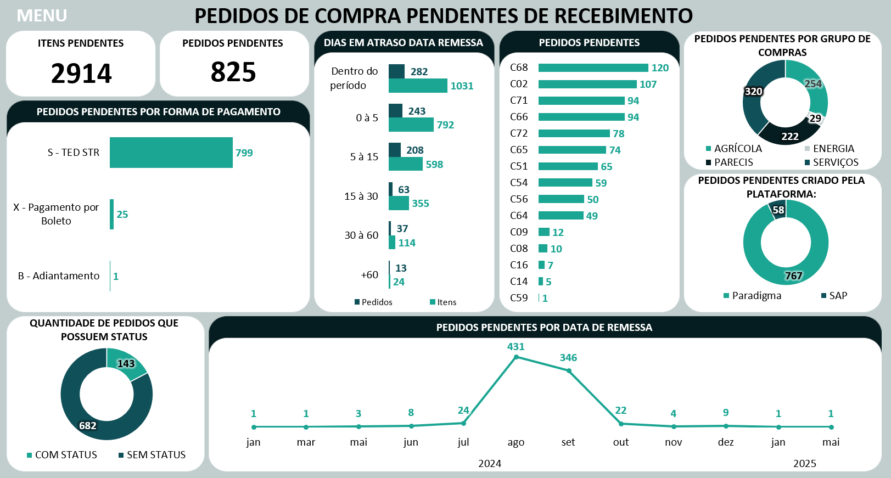

Meu Portfólio
A seguir, apresento alguns indicadores que desenvolvi utilizando Excel e a linguagem M para o tratamento dos dados das tabelas:
Indicador de Requisições Pendentes de Compra
Para uma análise de quantas compras ainda estão pendentes para serem realizadas em cada grupo de comprador e detalhes dessas requisições.
Indicador de Pedidos de Compra Pendentes de Recebimento de Mercadoria
Para realizar uma análise de quantos pedidos de compra ainda não tiveram as mercadorias entregues pelos fornecedores.